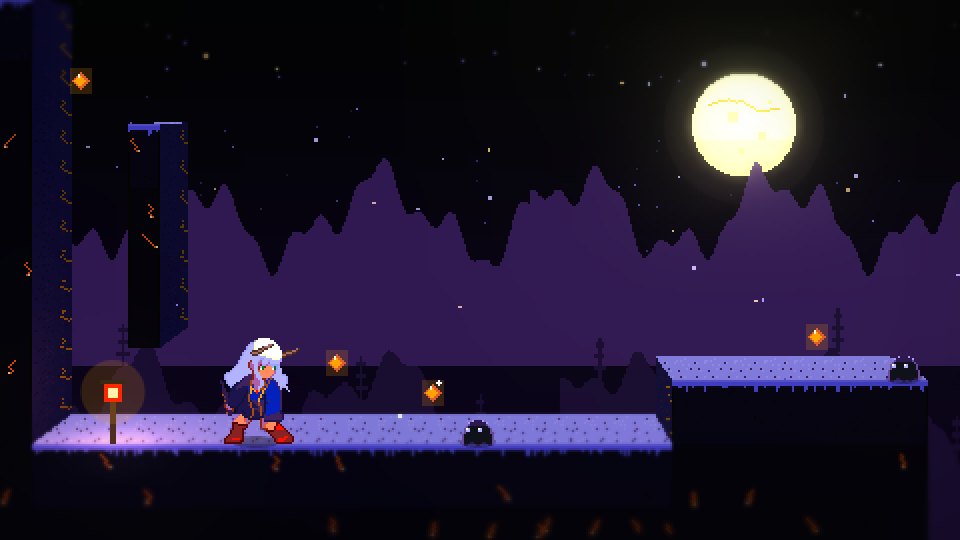

แบบ A
HD-2D มุมข้าง
เกม Kintsugi Run เดิมทั้งเกม (2 ด่าน 26 ท่า) แต่โลกเป็น 3D: บล็อกมีความลึก แสงโคม หมอก ต้นสนและภูเขาอยู่ไกลจริง หญ้าเบลอหน้าเลนส์
- กด 1 / 2 สลับภาพ 2D เดิม กับ HD-2D เทียบกันได้ทันที
- สังเกตเงาใต้ตัว แสงโคมที่เช็กพอยต์ และความลึกตอนกล้องเลื่อน